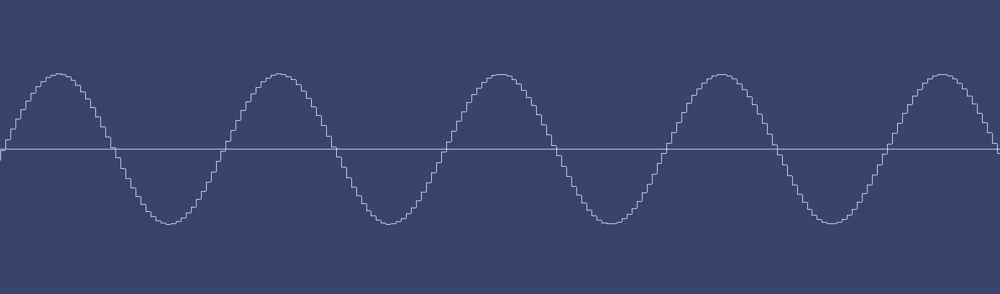
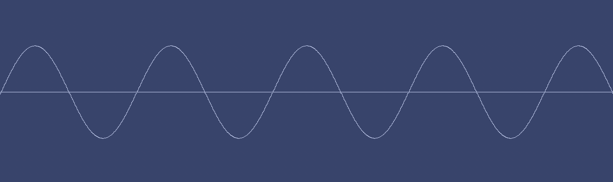
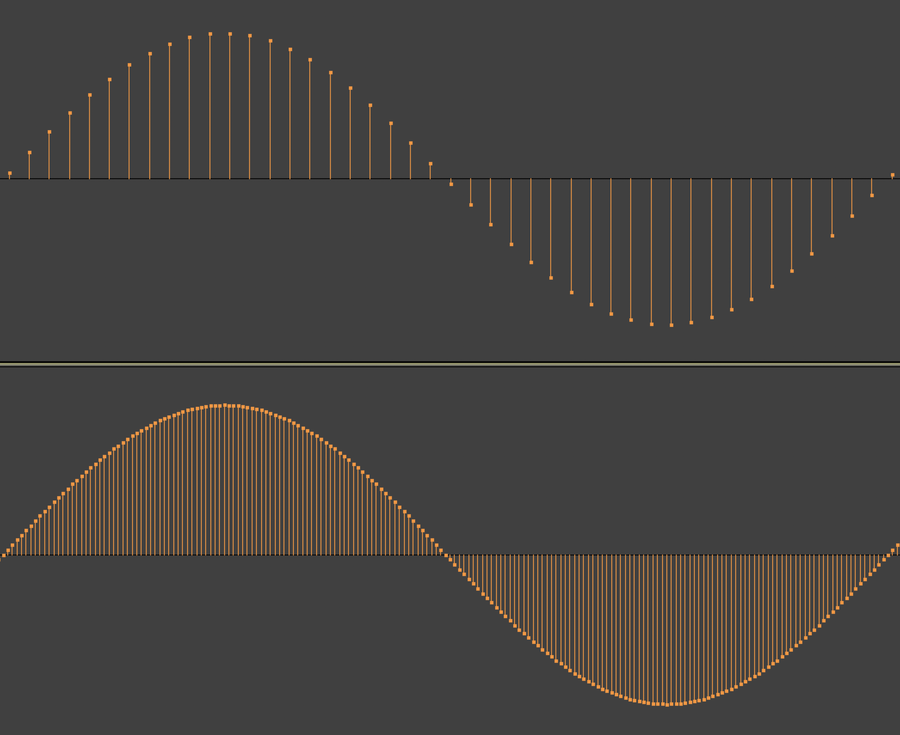
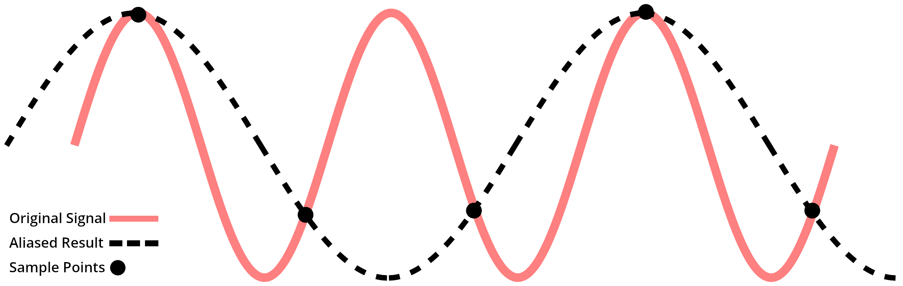

The Enduring Confusion Around High Sample Rates

Now that I’m the proprietor of a(n admittedly humble) home studio, I like to think that I’ve really come to terms with the nuts and bolts of music technology. But the truth is, I still have a lot to learn, as mastering even a single effect like compression can take some time.
There are other topics that some people think are best left undiscussed. I’ve really gone on a deep dive in the last couple of months trying to make sense of sample rates, particularly the case for using a high sample rate. For some people, it’s easy: just use 44.1kHz and be done with it. It’s the same sample rate that the CD uses, and it’s been the standard for decades. Other people swear that higher sample rates will make music sound better. To further complicate things, some folks will argue that high sample rates are not only unnecessary, but they can actually make your music sound worse.
Let’s start by making sure we’re all up to speed on this. If you already know the basics of digital audio, click here to jump ahead. In the meantime, let’s get started. Most music is captured with a microphone, which is really just an electromagnet that moves as air hits it. Moving magnets create electricity, which is carried away by the mic’s cable (a speaker basically uses the same principles in reverse).
So, how do you digitize all of the information in an electrical signal? Well, you can’t — there’s too much info to capture (at least for the time being). So the solution is to sample: the CD sample rate is 44.1kHz. An analog to digital converter (ADC or A/D converter) using a 44.1 sample rate will measure the electric signal of a mic 44,100 times a second. These measurements/samples are eventually used to create the original waveform.
Part of the argument for high sample rates seems intuitive: more samples mean more information. Here’s a 1kHz sine wave that I whipped up in Logic Pro with a sample rate of 44.1kHz:
This is zoomed in at a considerable scale. Remember that one period of this wave will last 1/1000th of a second, with a wavelength of about 13.5 inches (34cm). At this scale, it’s easy to make out the different sample points, but it more or less looks like a sine wave.
Now let’s whip up the same sine wave with a project sample rate of 192kHz:
Hmmm, this wave looks much better. Even zoomed in all the way, it’s almost impossible to make out the individual samples.
Let’s do a similar demo in Audacity:
We can clearly see that the wave on the bottom at 192kHz has over four times the information for each period of the wave when compard to the signal at 44.1kHz up top. So that means that the wave at 192kHz will sound better.
Right?
Well, have a listen for yourself. Here’s a 1kHz sine wave at 44.1kHz:
Here’s a 1kHz sine wave at 192 — hopefully by now the 3 MB file has loaded:
Listen closely. Do they sound the same? They should. Because they are the same.
That wasn’t a trick question. Those were two different audio files, each with a different sample rate. But what you were hearing is the miracle of digital audio. Sampling doesn’t get all of the information of an analog signal; but the thing is, we don’t need all of it. A sample rate of 44.1kHz can reproduce a perfect 1kHz sine wave. The sine wave at 192kHz does have extra information, but none of it’s needed to create a 1kHz sine wave.
This is not intuitive at all. Thankfully, seeing is believing — here’s a very famous video published back in early 2013 that visually demonstrates all of this:
This video has been passed around all over the internet; I’d wager that half of the views come from people who have sent it to a friend who stubbornly insists analog audio sounds better, even though digital sounds just as good, and often sounds better since it has a lower noise floor, a higher distortion ceiling, better frequency response, and has the added benefit of not destroying itself over time.
Ahem. Let’s stay focused. This video was cooked up by Chris “Monty” Montgomery, an engineer who invented the Vorbis technology that powers the .OGG file type (most famously used by Spotify and Wikipedia).
I would encourage you to watch the full thing, but the meat and potatoes come in the first eight and a half minutes or so. In the video, Monty uses an analog signal generator and two analog oscilloscopes: one connected to the generator, and another connected to the analog output of a basic audio interface that’s digitizing the signal from the generator. Even at 20kHz (the highest pitch any human could hope to hear), the two scopes look identical.
This all works because of the Sampling Theorem. You see, there’s a lot of math behind digital audio, most of it coming from the early 1900s in papers written about the telegraph and telephone. The Sampling Theorem says a lot of things, and there are a few ways to distill its key point.
Put simply, the Sampling Theorem states that, if you have a signal of a frequency 𝓧, you can perfectly reconstruct that signal by measuring it at something greater than 2(𝓧). So, if you have a signal with a frequency of 1000 hertz, measuring it (or sampling it) at something greater than 2000 times per second will give you all of the information you need to perfectly create the original signal.
There is another way to think of it: if you’re working with a sample rate of 𝓧, the highest frequency you can capture is 𝓧/2. So the highest frequency that a 44.1 sample rate can reproduce is 22,050 hertz, since 44,100/2 = 22,050 (half of the sample rate is a frequency called the Nyquist frequency).
What happens to frequencies above this Nyquist limit? Well, the sampling won’t work, and the audio will be aliased. Aliasing is a generic term for when signals get misinterpreted. In the case of digital audio, a high–frequency signal will get garbled up and distorted into a lower frequency signal:
The easy way to prevent aliasing is to just filter out everything above the Nyquist limit. The CD sample rate is not arbitrary. As I mentioned earlier, humans can’t hear tones above 20kHz (even then, most children struggle to hear that high — if you’re an adult, forget about it). So, at 20kHz, a filter starts to take effect to filter out high frequencies. It’s very challenging to create a filter in practice that just lops off everything past a specific point. It’s easier to use something more gradual:
With the CD sample rate, the filter can work from 20kHz to 22hKz, since 22.05kHz is our Nyquist frequency.
Accordingly, there’s a third way to think of the sampling theorem: if a signal contains no frequencies higher than 𝓧 hertz, it can be completely reconstructed by measurements that are taken at a frequency of 2(𝓧). When a signal has frequencies filtered out past a certain point, it is said to be bandlimited.
Ok, now that we got all of that out of the way, we know that the CD sample rate of 44.1kHz can perfectly capture and reproduce all of the frequencies we can hear. So then, what am I supposed to do with all these high sample rates? My Apollo interface goes up to 192. What’s the point?
Think back to the Nyquist frequency: with a sample rate of 192kHz, we can reproduce frequencies up to 96kHz. But we can’t hear above 20kHz, so what difference does it make?
Now we’re into a thorny subject. Audio with content above 20kHz is generally called “hi–res audio” (which is a problematic name as I’ll get into later), and for many audiophiles, the point of hi–res audio is to make music more authentic: if you were to listen to the music live, would be exposed to ultrasonics, so it’s best to include them.
Things are getting a bit philosophical; as someone who has stood right next to a crash cymbal played at full volume, I’m not terribly interested in having that experience recreated for me when I listen to drums on a record.
Of course, the more important question here is whether or not humans can detect these high frequencies in any way. There’s not a lot of great research into what effect ultrasonics have on the perception of music — what little there is usually describes the phenomenon as the “hypersonic effect”. And unsurprisingly, there’re studies both supporting and refuting its existence. It’s safe to say that it’s not settled science.
You can do some testing yourself — there exist tests online that let you listen to music
You might hear a difference, but it could have nothing to do with your ears. It could all be about your speakers. You see, most speakers aren’t designed to reproduce frequencies above 20kHz. If they try to, they will likely create distortion as they struggle to play these high frequencies. Alternatively, a speaker may have an amplifier that just filters out ultrasonic content.
One of the reasons people may say they prefer hi–res audio is actually because of distortion. Distortion is one of the reasons why people may think vinyl has a nice “warm” sound since audio has to be significantly mangled as it’s mastered for vinyl. And other types of distortion exist which are much trickier to deal with, bringing us to another video:
This one was published in early 2020 by Dan Worral of Fab Filter, a plugin designer. It’s become a sort of companion piece to Monty’s video, as they both have become the chagrin of audiophiles everywhere. It’s another long, technical video, and the crux of it comes in the first eight minutes or so, where Dan uses high frequencies to demonstrate something called intermodulation distortion.
Intermodulation is another complicated subject up there with the Sampling Theorem; topics like this one are typically discussed by electrical engineers more so than producers. Simply put, intermodulation distortion (IMD) occurs when two signals interact and create other signals called intercept points. IMD is caused by nonlinearities; in the case of audio, something is nonlinear if it doesn’t have a flat frequency response. Microphones, preamps, amplifiers, and audio interfaces all have some degree of nonlinearity, chiefly because it’s basically impossible to create something that treats any and all audio exactly the same. And as Dan shows in his video, certain audio effects are nonlinear by design.
IMD is something that always exists in recorded music, although for most cases, the intercept points are much too quiet to be of any concern (unless some heavy distortion is involved). It’s really only at ultrasonic frequencies that IMD products become problematic since linearity tends to get worse as frequencies increase. As Dan puts it:
…unless your playback system is 100% linear and free of any distortion whatsoever, then having extra inaudible content above 20kHz simply means you’ll have more unwanted intermodulation below 20kHz. If you bandlimit the signal by removing the inaudible content above 20kHz, you might actually end up with a cleaner, better–quality result.
So using a high sample rate seems to have diminishing results. It is very taxing on your computer and it will clog up your disk space, all for effects that might not exist (or could be adding distortion more than anything else), and nonetheless won’t be appreciated in any capacity by most of your audience.
So, why the hell do these high sample rates exists? Is so–called “hi–res audio” just snake oil? Well, according to some, yes. YouTube channel PresentDayProduction has a video featuring a portable recorder with an “intriguing” hi–res sticker. Or in other words, “the sticker gives the game away; the answer, largely, is marketing”.
That might be a little unfair, as there are some very specific reasons to use a high sample rate. Monty’s video was inspired by an article he wrote in March of 2012. The original link 404’s for some reason, but it has been archived. In the article, Monty mentions how a high sample rate (more specifically a higher Nyquist limit) could fix some problems with filters. Remember, filtering out content above the Nyquist frequency is essential to prevent aliasing. But early filters weren’t very good; chiefly, they tended to screw with the audio in the audible range by creating artifacts and phases shifts.
One solution is to use a gentler, less diligent filter, one that doesn’t mess with the audio as much. Such a filter would let frequencies past 22kHz, so a higher Nyquist limit is needed — ergo, a higher sample rate.
But is this still a problem? Filters have come a long way, especially the digital filters most modern converters use. I have never doubted the transparency of my Apollo interface. And to be clear, the whole point of a high sample rate in this regard isn’t to include ultrasonics; as such, it’s more accurate to describe this process as oversampling.
more space between nyquist and audilble range allows for easy filtering. interfaces might do this anyway
One other practical use of a high sample rate is extreme pitch shifting or time stretching. If you push a 44.1kHz clip of audio down an octave, you will have no content from 10kHz and up, so the result may sound a bit thin and hollow. Using a high sample rate will fix this, as ultrasonic content will be brought down into the audible range, creating a fuller sound and reducing IMD from the ultrasonics. You can hear the effects in this video, although note that the best sounding sample used a niche microphone that has been demonstrated to capture frequencies up to 100kHz. Most studio mics can’t do that.
You may have noticed that Monty disabled the comments on his video, although if you start digging through the comments on Dan’s video, it’s easy to see why Monty may have done that:
Oy vey… let’s focus on some misconceptions that are easier to comprehend. For instance, some people think the Sampling Theorem only works for sine waves, and the whole thing falls apart for real music:
Apparently, the only solution is to use a higher sample rate, or god forbid an analog recording medium.
Think big picture: the ultimate goal of an A/D converter is to measure the frequency and amplitude of an electric signal and store that information digitally. The way a microphone works doesn’t change regardless of what you stick it in front of. It’s still producing a signal with frequency and amplitude, which is all you need to create any audible sound. It makes no difference to the mic, the converter, or the Sampling Theorem how complex the sound is.
There’s another misconception out there about the timing of a sample rate, evinced by this comment from a ProToolsExpert post about Dan’s video:
Others in the comments have remarked on the greater temporal accuracy and improved imaging we get from high sample rates. That temporal accuracy also gives us a much better capture of the evolution of partials well within the range of human hearing. [For] real instruments, partials aren’t simple multiples of the fundamental. They evolve in many complex ways based [on] the materials and other physical characteristics of an instrument. Higher sample rates give us many more points to represent the evolution of those partials. At low rates, partials are represented less accurately and the situation only worsens as [the] signal passes through even the simplest of filters. This is less of a problem at high rates and when we finally downsample, we’ve still got something that’s closer to the truth.
I’ve seen comments on Dan’s actual video that more or less say the same thing.
Now, if you watched the first chunk of Monty’s video, you might be able to piece together why this claim doesn’t make sense. In any case, Monty addresses this specific point just before the 21–minute mark:
...You’ve probably heard that the timing precision of a digital signal is limited by its sample rate; put another way, that digital signals can’t represent anything that falls between the samples… implying that impulses or fast attacks have to align exactly with a sample, or the timing gets mangled, or they just disappear. At this point, we can easily see why that’s wrong. Again, our input signals are bandlimited. And digital signals are samples, not stairsteps, not “connect–the–dots”. We most certainly can, for example, put the rising edge of our bandlimited square wave anywhere we want between samples. It’s represented perfectly and it’s reconstructed perfectly.
It seems like even after 8 years and 500,000+ views, people still think you hear discrete samples coming out of the speakers connected to a digital audio device. You don’t.
So, what does all this mean? Well, like many others have said, just use 44.1 or 48 and be done with it. Then you can spend more time writing good music and practicing your instrument instead of stressing about it all.
https://en.wikipedia.org/wiki/Direct_Stream_Digital#DSD_vs._PCM
https://www.cco.caltech.edu/~boyk/spectra/spectra.htm

Posted on July 2, 2021
Tags: 2021 • Transcription